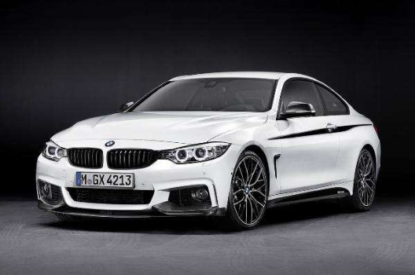

Ferrari
A Ferrari é uma fabricante italiana de automóveis (tanto de competição, como esportivos de luxo),
fundada por Enzo Ferrari em 1939 como Scuderia Ferrari
Inicialmente, a Scuderia Ferrari patrocinou pilotos e carros de corrida fabricados, tendo, no ano de
1946, 50% das ações da companhia foram vendidas para a Fiat e que em 1988 passou a deter 90% da
empresa ao comprar na época a parte do Enzo Ferrari que faleceu naquele ano. Em 2014, a Ferrari
vendeu 10% das ações da Ferrari para o filho de Enzo, Piero Ferrari, faz parte do grupo FCA. A
empresa está sediada na cidade de Maranello, no norte de Itália.
Em 2016, por meio de uma cisão, a Ferrari se separou da FCA e fez um IPO de suas ações na bolsa de
valores e passou a ter suas ações e operações geridas pela empresa holandesa FE Interim B.V., criada
para esta finalidade. Famoso símbolo é um cavalo negro que tinha quatro patas apoiada no chão e
agora tem duas, empinado num fundo amarelo, sempre com letras S F de Scuderia Ferrari. O cavalo era
originalmente o símbolo do Conde Francisco Baracca, um lendário 'asso'(às) da força aérea da
italiana durante a Primeira Guerra Mundial, que pintou na lateral de seus aviões.
Baracca morreu muito jovem em 19 de junho, abatido após 34 duelos vitoriosos e muitas vitórias em
grupo, tornando-se assim um herói nacional. Baracca queria um cavalo empinado nos seus aviões porque
a sua esquadra, os 'Battaglione Aviatori', fora inscrita num regimento da Cavalaria (as forças
aéreas estavam nos seus primeiros anos e não tinham administração separa), e também porque ele mesmo
tinha a reputação de melhor cavaliere (cavaleiro) de sua equipe.
Porsche
Marca alemã Porsche foi fundada em 1931 por Ferdinand Porsche e seu filho
Ferry Porsche. Ferdinand Porsche já era conhecido antes de fundar a Porsche, ele havia
trabalhado para outras marcas. Havia também lançado em 1900 o primeiro automóvel híbrido.
Em 1934, Ferdinand Porsche, depois de lhe ser solicitado a criação de um automóvel acessível a
todos os alemães, criou o Volkswagen Fusca. O Fusca serviu de base mecânica ao Type 64 criado em
1939 e ao Porsche 356 produzido em 1948, sendo este o primeiro Porsche a ser produzido 1948, sendo este o primeiro Porsche a ser produzido.
O Porsche 356 recorria em grande parte às peças utilizadas no Volkswagen Fusca, tais como
motorização traseira com refrigeração a ar. Mais tarde o 356 viria a ser totalmente construído a
partir de peças Porsche.A utilização de um motor com refrigeração a ar e localização traseira
foi desde o início, a principal característica da Porsche. Em 1951, Ferdinand Porsche morre
devido a complicações de um enfarte, nesse mesmo ano a Porsche vence a classe nas 24h de Le Mans
com o Porsche 356 SL, conseguindo assim notoriedade internacional. Portanto, a Porsche
representa um cavalo empinando é o símbolo da cidade de Stuttgart, a cidade alemã onde está
sediada a Porsche. No caso da marca alemã, o símbolo seria definido e conhecido apenas em 1952,
quando seu primeiro modelo, o Porsche 356 foi o primeiro a ostentá-lo.
BMW

As raízes da BMW estão ligadas a Karl Rapp e Gustav Otto. Em 1917, a empresa Rapp Motorenwerke
Byertoren Werke, Aktiengesellschaft. Em 1916, a empresa Flugmaschinenfabrik Gustav Otto foi
incorporada à Bayerische Flugzeug-Werke (BFW) a pedido do governo. A BMW posteriormente transferiu
suas operações de construção de motores – incluindo a empresa e os nomes da marca – para a BMW, em
1922. A data de fundação da BMW, 7 de março de 1916, entrou para a história como a data de
nascimento da Bayerische Motoren Werke.
Inicialmente a Bayerische Motoren Werke foi fundada com o intuito de produzir motores para aviões,
mas após a Primeira Guerra Mundial, devido ao Tratado de Versailles, foi proibida de construí-los.
Por esse motivo chegou a produzir motocicletas, e mais tarde dedicou-se à fabricação de automóveis.
Até há pouco tempoa própria BMW dizia que o seu símbolo representa uma hélice de avião a girar
juntamente com o símbolo da Baviera, mas em descobertas recentes, a BMW alterou a sua versão sendo o
azul/branco proveniente de uma antiga bandeira da Baviera. O símbolo BMW foi estampado na carroceria
de um carro pela primeira vez em 1928.
A BMW hoje é dona também das marcas Mini e Rolls-Royce Motor Cars e anteriormente também da Land
Rover, o atual Range Rover foi desenvolvido em grande parte pela marca germânica. Hoje a Land-Rover
pertence ao grupo indiano Tata. Atualmente, o grupo BMW orientou firmemente sua visão para o setor
de alto padrão do mercado internacional de automóveis e motos, reunindo quatro marcas: Mini,
Rolls-Royce Motor Cars, BMW e BMW Motorrad. O grupo BMW tem atualmente 30 fábricas em 14 países.
A BMW iniciou investimentos em iniciativas sustentáveis e relacionadas à economia colaborativa. A
montadora tem investido em compartilhamento de veículos, com as empresas DriveNow e ReachNow,
disponibilizando carros para usuários na Europa e Estados Unidos, respectivamente.